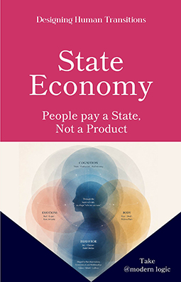
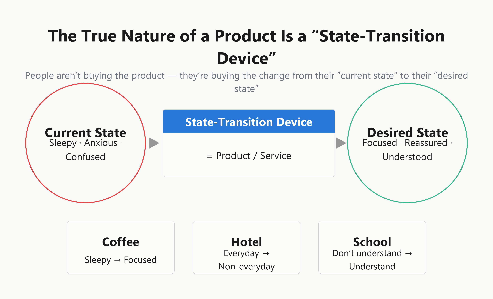
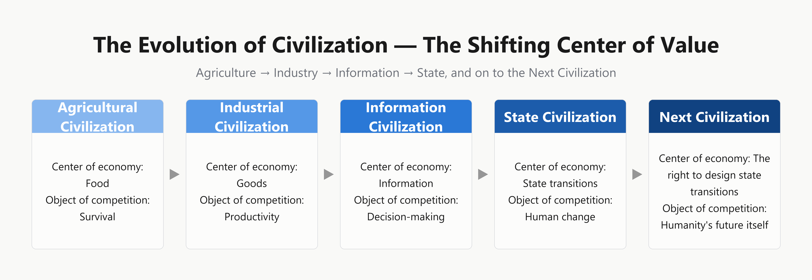
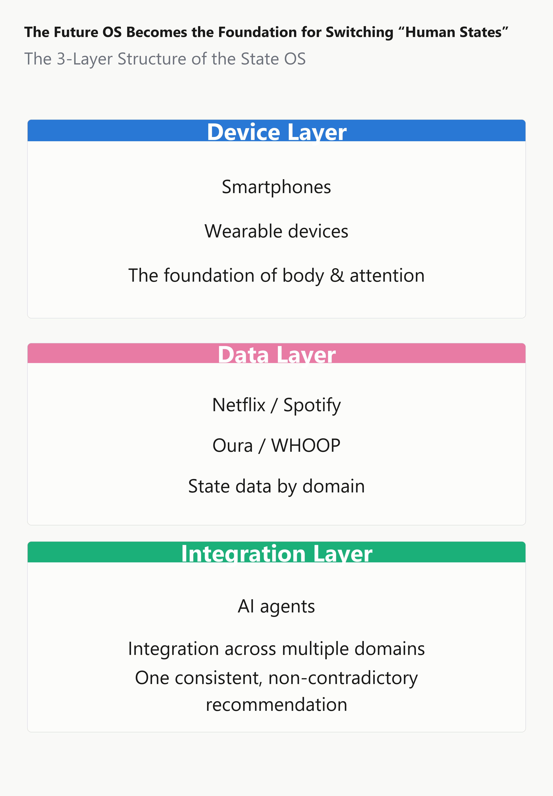
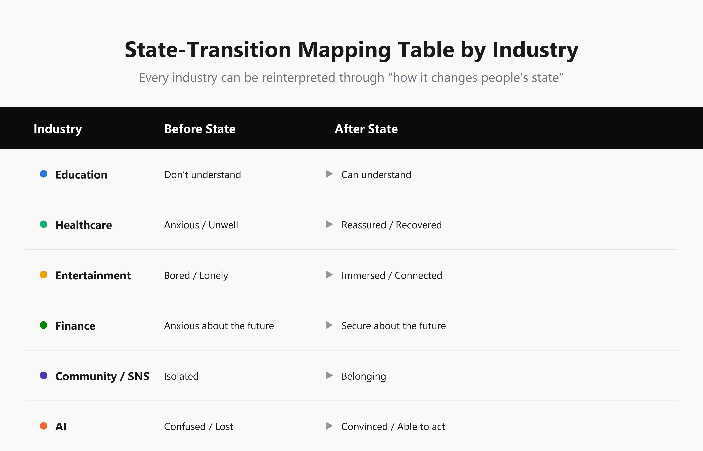
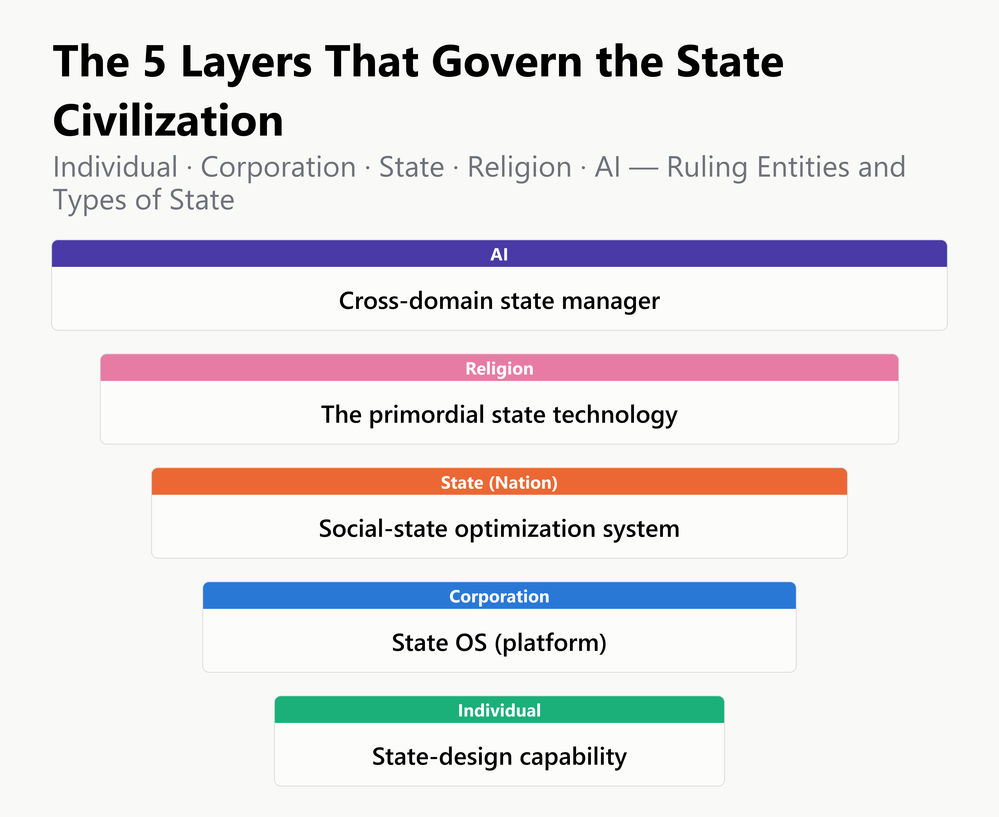

"Making a good product" is no longer
enough to be chosen.
What people are actually buying is not the product — it's the single instant a "state" changes.
Coffee doesn't sell you a caffeine hit — it sells the switch from drowsy to focused. A hotel doesn't sell a room — it sells time spent leaving the everyday behind. Same function, same price: the reason one gets chosen over the other lies one step beyond it.
For a long time, we described the nature of value as moving from goods, to services, to experience. What this book reveals is the stage one step further still: "state transition." From drowsiness to focus, from anxiety to reassurance, from loneliness to empathy — education, healthcare, finance, entertainment, and retail, industries that look utterly unrelated; religion, humanity's oldest apparatus; the nation, a system of governance; and AI, a civilization now taking shape — all of it can be read through a single structure: the design of the human state. What individuals, companies, and nations will compete over next is neither products nor information. It is the right to design states.
Author: Take @ Modern Logic ／ Kindle Edition

Does any of this feel familiar?
Every time you've been told to "raise the experience value" or "differentiate," there's been an unshakeable sense that something isn't quite explained. You just haven't put it into words yet.
You can't explain, in terms of features or specs alone, why customers choose you at this price.
You're building what you believe are good products and services — yet real differentiation never seems to follow.
As AI makes information free, you carry a vague unease about where your own value, or your company's, is going to survive.
You're told to "raise the experience value" — but no one can say exactly what that means to design.
You sense that social media and apps are engineering how you spend your time, but can't quite put the mechanism into words.
Every conversation about marketing or product development still stalls on "what do we sell" — and never moves past it.
Differentiation by "product," or differentiation by "state"
In the very same market, only those who re-locate value one level deeper gain access to a new axis of competition.
Still measuring the next move by product, service, and experience (the trap most companies fall into)
Still haven't escaped the premise that "if you make something good, it gets chosen"
- ✓Haven't escaped the premise that a good product sells itself
- ✓Champion "raising the experience," without ever making concrete what to design
- ✓Losing sight of your own value, as AI makes information free
- ✓Can only explain why you're chosen using the yardsticks of price or features
Read through the one-level-deeper structure of "state transition" (this book's approach)
Reframes the object of design — not the product, but the "change" that lies beyond it
- ✓Reframes the object of design as the change from a "current state" to a "desired state" — not the product
- ✓Reads education, healthcare, finance, and entertainment through the very same structure that runs through religion, the nation, and AI
- ✓Introduces the "State OS" — a new axis of competition built on the continuous accumulation of state data
- ✓Measures the ethics of design against four standards: transparency, choice, direction of purpose, and reversibility
The true nature of a product is a "state-transition device"
This is where the difference that price and features can't explain lives. The wine experiment, insurance as a product, the stories brands tell — all of it reads through the very same structure.

It looks as though we're buying products — but what we're really buying may be "the change into the state we desire." Tell someone the very same wine costs more, and they rate it as tastier, with the pleasure-related regions of the brain responding more strongly still — even price itself can become staging for switching a state.
Value moved from goods, to services, to experience. And now, to "the state"
Agrarian society delivered food. Industrial society delivered goods. The service economy delivered convenience. The experience economy delivered being moved. What comes next is the era of "the state" that lies one step beyond.

Agrarian Society — Food
An era when the calories needed simply to survive were, quite literally, wealth.
Industrial Society — Goods
Sturdier cloth, faster cars. An era when "owning things" was the proof of prosperity.
Service Economy — Convenience
An era when being able to receive the service you needed, exactly when you needed it, came to matter most.
Experience Economy — Being Moved
An era when companies began selling not products or services, but the memorable experience itself.
State Economy — State Transition
People seek not the experience itself, but the "change of state" that experience produces. This is the point where we now stand.
Who this book is for
What rules the world is the "State OS"
A smartphone is not an information device. It is the foundation — device layer, data layer, and integration layer stacked together — that underlies human state transitions.

Device Layer
The most foundational layer, in which the smartphone or wearable device itself determines how our body and attention are handled.
Data Layer
The layer in which individual services — Netflix, Spotify, Oura, WHOOP — continually accumulate "state data" within their own domains.
Integration Layer
The layer of the AI agent, which bundles state data spanning multiple domains into a single, internally consistent piece of advice for one human being.
Oura's "Readiness Score." WHOOP's "Recovery Score." What the user is looking at is not a graph of heart rate. It's an answer condensed onto a single screen: "what state am I in right now." Netflix has disclosed that nearly 80 percent of all viewing arises via a recommendation engine of exactly this kind.
Industries that look utterly unrelated are connected by the very same role
Not what you make, but what state transition you provide. Take that vantage point, and competitors that cross every industry boundary come into view.

Education
From "I don't understand" to "I understand." Supports the state transition of cognition and behavior.
Healthcare
From "anxiety" to "reassurance." Supports the state transition of body and mind.
Entertainment
From "boredom" to "immersion." Moves emotion, and changes what's inside a person.
Finance
From "anxiety about the future" to "confidence in the future." Designs reassurance alongside assets.
Retail
From "a little hungry" to "satisfied." Changes a customer's state the instant they walk in.
Community / SNS
From "isolation" to "belonging." Provides the state transition of approval and connection.
AI
From "hesitation" to "conviction." Accompanies the small decisions of daily life.
Religion
From "anxiety" to "acceptance." Humanity's oldest state-design apparatus.
A fitness gym's true competitor may not be another gym, but a meditation app — because both provide the very same state transition, from "stress" to "calm." A competitive structure invisible from the supply side's classification reveals itself clearly the instant you adopt the state-transition perspective.
Who are the winners of the State Economy?
The individual, the company, the nation, religion, and AI. Across five layers, the conditions that decide victory and defeat are beginning to change.

The Individual Winner
Not "what they know" — what will carry value is the ability to read another person, discern the state they should be guided into, and actually bring about that change.
The Corporate Winner
Not a product's function or price — the quality and volume of accumulated "state data" generates a competitive advantage that can't easily be copied.
The National Winner
Not GDP or military power — a "state score" built from citizens' security, health, and motivation to learn becomes the new yardstick for true strength.
Religion as Apparatus
The anxiety of death. The meaning of existence. Fundamental loneliness. Religion still carries a domain no other industry has yet managed to fully replace.
AI, the Winner
Once state data is integrated across the boundaries of individual, company, and nation, AI could become either a "state-liberation device" or a giant apparatus of domination.
A state can be designed. Which is exactly why it can be manipulated.
Social-media notifications, recommendations, news headlines — the very same technology can be used to help a person, or to exploit them.
Transparency
The idea that users should have the right to know how a mechanism of state design actually works.
The Possibility of Choice
No matter how skillfully a state transition is designed, the freedom to step away and choose a different path should always remain.
The Direction of Purpose
Whether a design aims at maximizing dependency and consumption, or at the user's own autonomy and well-being.
Reversibility
Whether, no matter how skillful the design, a path is provided for the user to escape its influence and return to their original state.
"Where am I trying to lead this person?"
Whether one can keep answering this question honestly is what will separate the designers of the era ahead from those who are not.
Table of Contents
Preface, nine chapters, a final chapter, and an afterword
In an Era When the Scarcity of Information Has Vanished
What becomes valuable next is "the state" / Our days are made up of a continuous stream of countless state transitions
The World Began Selling "States"
The evolution of value: goods → services → experience → state / Hedonic adaptation and the peak-end rule
People Are Buying "State Transitions"
The wine price experiment, insurance as a product, prospect theory and the anchoring effect
The World Is Evolving into the "State Transition Industry"
The common structure running through education, healthcare, entertainment, finance, and retail / How this differs from Jobs to Be Done theory
What Rules the World Is the "State OS"
The device, data, and integration layers / A map of companies that hold a state database
The Nation Is a Giant State-Design Apparatus
The Nudge Unit, GNH, the Minister for Loneliness / Biopower and governmentality
Religion Was the First State Industry
Converting states of anxiety, behavior, and meaning / Kukai and the staging of the kanjo ritual
AI Will Become a New Civilization
The ELIZA effect and parasocial relationships / From information to state, from state to meaning-making
The Ethics of State Design
Four standards: transparency, the possibility of choice, the direction of purpose, and reversibility
The Winners of the State Economy
The conditions for winning, seen across five layers: individual, company, nation, religion, and AI
The Future Competition Will Be Over "the Right to Design States"
Where am I trying to lead this person? / Life itself as a story of state transitions
What's needed isn't a better product.
It's choosing what state to create.
Not a book of economics. Not a marketing textbook. Coffee, hotels, education, healthcare, finance, AI, the nation, religion — one single structure, "state transition," running through domains that share no name and no context. By the time you finish, what remains in your hands isn't a technique for differentiation. It's an entirely new lens of thought for reading the economy, and the civilization, to come.